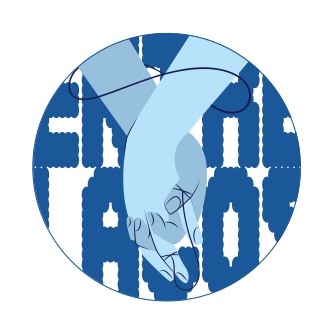

Você não está sozinho.
Um espaço seguro para conversar, aprender e cuidar da sua saúde emocional.
preciso conversar
Um espaço seguro para conversar, aprender e cuidar da sua saúde emocional.
preciso conversarEntenda o que é, os sintomas comuns e técnicas eficazes para acalmar a mente nos momentos difíceis.
Ler maisIdentifique os sinais, saiba a diferença entre tristeza e depressão, e veja como buscar ajuda.
Ler maisComo o estresse afeta o corpo e a mente, e maneiras saudáveis de gerenciá-lo no seu dia a dia.
Ler maisConstrua uma relação mais gentil consigo mesmo, praticando o autocuidado e a autocompaixão.
Ler maisCompreenda as fases do luto, acolha suas emoções nesse processo e saiba que o tempo tem seu próprio ritmo.
Ler mais
10 minutos de prática simples para acalmar a mente.

Técnica militar rápida para controle do estresse agudo.

Música ambiente suave para dormir, estudar ou meditar.

Exercícios leves para liberar a tensão física acumulada.

Como se manter presente no momento atual com compaixão.

Som terapêutico profundo para relaxar corpo e mente.
Aqui você pode conversar anonimamente com outras pessoas ou com nossa equipe de apoio em um ambiente baseado no respeito, empatia e escuta ativa.
O EntreLaços é um projeto acadêmico desenvolvido por estudantes de Sociologia Aplicada ao Design do primeiro período do curso de Design na Universidade Federal da Paraíba (UFPB).
A proposta surgiu como parte de uma atividade voltada ao desenvolvimento de soluções criativas para demandas sociais, utilizando o design como ferramenta de transformação e inclusão.
Nosso objetivo é oferecer um espaço acolhedor, acessível e gratuito, onde as pessoas possam encontrar informações sobre saúde mental, recursos de autocuidado e um ambiente seguro para conversar de forma anônima. O projeto busca incentivar o cuidado com o bem-estar emocional e promover conexões baseadas no respeito, na empatia e na solidariedade.
O EntreLaços não substitui o acompanhamento de psicólogos, psiquiatras ou outros profissionais da saúde. A plataforma foi criada para oferecer apoio inicial, acolhimento e informação, sempre incentivando a busca por ajuda profissional quando necessário.